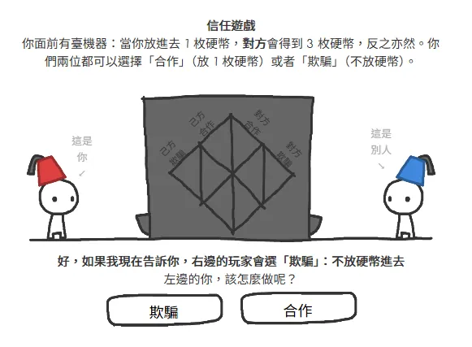

在資訊過載與人際網絡高度複雜的環境中，如何建立具備高期望值的生存策略？
此思考源於對數位社群生命週期的觀察。多數社群最終走向沉寂，主因在於個體為規避風險而選擇隱藏真實意圖（潛水）。當系統內僅存單向的資訊消耗而缺乏實質產出，依據熱力學邏輯，系統必然走向無序與熱寂 (Heat Death)。
# 賽局理論與信任演化
信任是基於賽局理論 (Game Theory) 的動態博弈過程。透過經典的互動模型《信任的演化 (The Evolution of Trust)》，可將人際互動抽象化為「重複囚徒困境 (Iterated Prisoner's Dilemma)」，進而推演出信任建立的底層數學邏輯。

# 最佳化策略模型：一報還一報 (Tit for Tat)
在重複囚徒困境的電腦模擬演算中，被證實具備最高長期收益的策略，其演算法結構極度精簡：
# 策略演算法邏輯：
1. 初始狀態 (Initial State)：
預設合作 (Cooperate)。在缺乏先驗數據時，假設對方為善意節點。
2. 對等反饋 (Reciprocity)：
鏡像對方的上一輪行為。
(若對方背叛，則觸發防禦機制；若對方合作，則維持合作)
3. 容錯機制 (Forgiveness)：
若對方改變策略恢復合作，系統立即解除防禦狀態並恢復合作，避免陷入無限報復的惡性循環。
此策略的優越性在於其「無記憶性」與「確定性」。它透過確定的反擊機制阻斷了被單向剝削的風險，同時藉由寬恕機制最大化了非零和賽局 (Non-zero-sum Game) 中的長期協作紅利。
# 系統環境與零和偏差
統計數據指出，現代人際網絡中的高質量連結正顯著下降。核心原因在於「重複互動 (Repeated Interactions)」頻率的降低，導致建立長期信任機制的成本急遽攀升。
而整體環境的認知框架，也逐漸向「零和賽局」傾斜：
- 零和賽局框架： 個體悲觀地將系統資源視為定值，認為自身收益必然建立於他人損失之上。
- 非零和賽局框架： 透過協作創造系統增量，這才是促使信任機制得以大規模傳播的必要環境參數。
# 系統雜訊 (Noise) 對策略穩定性的影響
資訊傳遞過程中必然存在雜訊，即所謂的「誤解」。在進入數據之前，先界定三種策略：
- 完全公平的模仿者 (Copycat)：初始合作，之後鏡像對方上一輪行為。被背叛就立刻背叛、被合作就回到合作。沒有寬容機制，誤解一次就會進入互相報復循環。
- 具備寬容機制的模仿者 (Copykitten)：同樣鏡像對方上一輪，需要連續兩輪被背叛才會背叛。允許單次「誤解」過去，帶有容錯機制。
- 絕對背叛者 (Always Cheat)：無論對方怎麼出，永遠選擇背叛。短期內能剝削合作者，長期無法建立信任網絡。
這三個策略的勝負，會隨「雜訊強度」變動：
- 0% 雜訊完全公平的模仿者 (Copycat) 取得全局最佳解。
- 1%-9% 雜訊具備寬容機制的模仿者 (Copykitten) 獲勝。微量的雜訊能促進系統演化出更高的容錯率。
- 10%+ 雜訊系統崩潰，絕對背叛者 (Always Cheat) 佔據主導地位。
結論明確：適度的系統雜訊能催生更具韌性的寬容機制，但過載的雜訊將直接導致信任網絡的全面崩解。
Conclusion
賽局理論的核心啟示在於：「遊戲規則決定了玩家的行為模式。」規則可被理解、可被選擇。
在微觀尺度上，環境參數約束了個體策略；但在巨觀尺度上，個體的群體行為正是建構環境本身的核心變數。
長期生存的最佳實踐，在於主動建構具備重複互動屬性的網絡、確保資訊傳遞的精確性以降低系統雜訊，並堅守互惠與適度寬容的演算法邏輯。